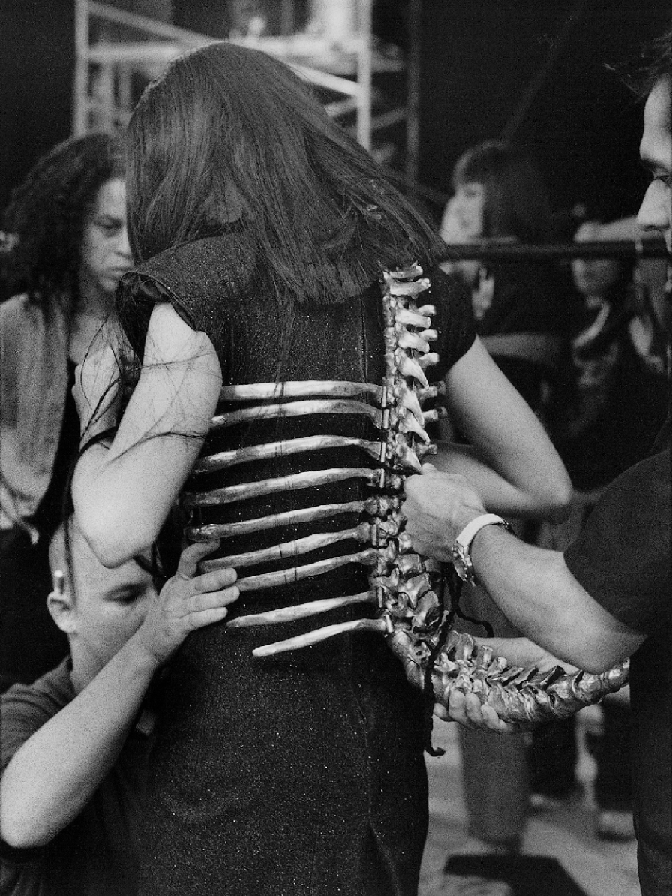

A collection of wonders from across the world and beyond, the cabinet of curiosities celebrated the esoteric, and literally extraordinary, objects that seemed to defy nature. With its roots in the 16th century Wunderkammer, the cabinet of curiosity has long fascinated artists and thinkers of all kinds. In placing these enigmatic objects alongside others that diverge from the norm, collectors attempted to make sense of the world around them – a philosophical endeavour that led to the first public museums. It’s an arrangement that could also apply to McQueen’s juxtapositions of images from art, film, nature, history and ethnography on his mood boards. In Savage Beauty, the Cabinet of Curiosities showcased the breadth of McQueen’s inspirations, and the atavistic and fetishistic objets d’art made in collaboration with milliners, jewellers and scenographers.
Shaun Leane, a jeweller collaborated with the designer since 1995 is responsible for some of the most visceral of Alexander McQueen’s accessories. The ‘Spine’ corset for Untitled (Spring/Summer 1998) not only reveals McQueen’s fascination with the ogee line and predilection for designing from the side but also, appended with a tail, the hybrid creature the corset suggests would be a prime candidate in any self respecting collector’s cabinet. (The ‘Spine’ corset was in fact
Photograph by Anne Deniau